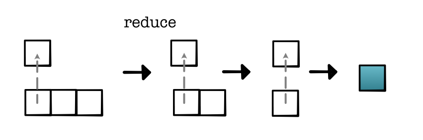

Machine Learning Engineering
Lecture 3
Testing and Functions
Today's Class
Development Setup
Testing and Hypothesis
Functional Python
Getting Setup
First assignment link
Due Wednesday
Setup QAs
Everyone should be setup
Git Links
The Guidebook
Full description of the material
Testing
Running Tests
Run tests
>>> python -m pytest tests/Or per task
>>> python run_tests.pyPyTest
Finds files that begin with test
Finds functions that begin with test
Select based on filters
Gotchas
Test output is verbose
Read tests
Protip: minimize testing speed
Helpful Filters
Specific task
>>> python -m pytest tests/ -m task0_1Specific test
>>> python -m pytest tests/ -k test_sumHow do unit tests work?
Tries to run code
If there is a False assert it fails
Only prints if test fails!
assert and assert_close
Module 0 Functions
Implement
def relu(x):
"""
:math:`f(x) =` x if x is greater than 0, else 0
(See `<https://en.wikipedia.org/wiki/Rectifier_(neural_networks)>`_ .)
"""Pretty basic function.
How do we know it works?
Standard Unit Test
Test for values with given inputs
def test_relu():
assert operators.relu(10.0) == 10.0
assert operators.relu(-10.0) == 0.0(PyTest succeeds if no assertions are called)
Ideal: Property Test
Test that all values satisfy property
def test_relu():
for a in range(0, 1e9):
assert operators.relu(a) == a
for a in range(-1e9, 0):
assert operators.relu(a) == 0.0Intractable
QuickCheck (Hypothesis)
Compromise: Randomized Property Test
Test that randomly selected values satisfy property.
@given(floats())
def test_relu(a):
value = operators.relu(a)
if a >= 0:
assert value == a
else:
assert value == 0.0Greater coverage with less code
Custom Generators
Can provide your own randomized generators
Future assignments will utilize this feature.
Functional Python
Functional Programming
Style of programming where functions can be passed and used like other objects.
One of several programming styles supported in Python.
Good paradigm for mathematical programming
Functional Python
Functions as Arguments
def combine3(fn, a, b, c):
return fn(fn(a, b), c)
def add3(a, b, c):
return combine3(add, a, b, c)
def mul3(a, b, c):
return combine3(mul, a, b, c)
add3(1, 3, 5) # 9Functional Python
Functions as Returns
def combine3(fn):
def apply(a, b, c):
return fn(fn(a, b), c)
return apply
add3 = combine3(add)
mul3 = combine3(mul)
add3(1, 3, 5) # 9
combine3(add)(1, 3, 5) # 9
def combine3(fn):
return lambda a, b, c: fn(fn(a, b), c)Higher-order Filter
Extended example:
def filter(fn):
def apply(ls):
ret = []
for x in ls:
if fn(x):
ret.append(x)
return ret
return apply
def more_than_4(x):
return x > 4
filter_for_more_than_4 = filter(more_than_4)
filter_for_more_than_4([1, 10, 3, 5]) # [10, 5]Module-0 Functions
-
minitorch.operators.map(fn) Higher-order map.

See https://en.wikipedia.org/wiki/Map_(higher-order_function)
- Parameters
fn (one-arg function) -- process one value
- Returns
a function that takes a list and applies fn to each element
- Return type
function
Module-0 Functions
-
minitorch.operators.zipWith(fn) Higher-order zipwith (or map2).

See https://en.wikipedia.org/wiki/Map_(higher-order_function)
- Parameters
fn (two-arg function) -- combine two values
- Returns
takes two equally sized lists ls1 and ls2, produce a new list by applying fn(x, y) one each pair of elements.
- Return type
function
Module-0 Functions
-
minitorch.operators.reduce(fn, start) Higher-order reduce.
- Parameters
fn (two-arg function) -- combine two values
start (float) -- start value \(x_0\)
- Returns
function that takes a list ls of elements \(x_1 \ldots x_n\) and computes the reduction \(fn(x_3, fn(x_2, fn(x_1, x_0)))\)
- Return type
function
Functional Python
Rules of Thumbs
Can get confusing.
When in doubt, write out defs
Visualization
Main Idea
Show properties of the code and training as you code.
Library: Visdom
Code
>>> visdom &
Code Snippet
Visdom windows
import visdom
vis = visdom.Visdom()
vis.text('Hello, world!', win="hello")